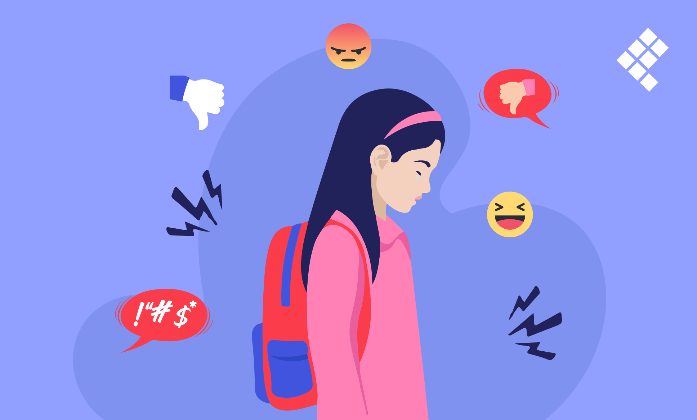
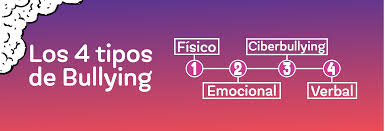
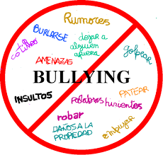

¿Qué es el acoso escolar?

El acoso escolar es un comportamiento agresivo que ocurre de manera repetida entre estudiantes. Puede ser físico, verbal o psicológico, y afecta a la víctima causando daño emocional y social.
Tipos de acoso

- Físico: golpes, empujones.
- Verbal: insultos, burlas.
- Emocional: excluir a alguien, discriminar, divulgar rumores.
- Digital (ciberacoso): mensajes ofensivos en redes sociales.
Consecuencias

El acoso puede provocar tristeza, ansiedad, bajo rendimiento escolar e incluso depresión. Es importante detectarlo a tiempo para evitar daños mayores.
¿Cómo prevenirlo?

- Respetar a los demás.
- Hablar con un adulto de confianza.
- No quedarse callado.
- Apoyar a las víctimas.